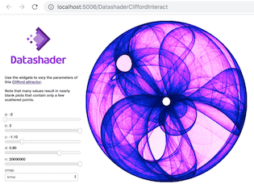
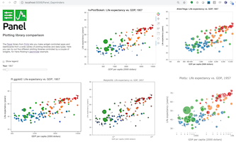
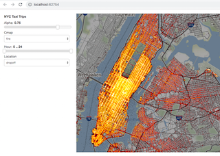
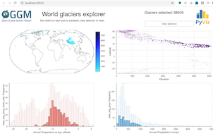
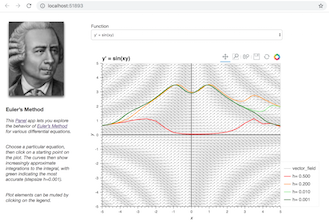

A high-level app and dashboarding solution for Python ¶
Panel is an open-source Python library.
Panel provides tools for easily composing widgets, plots, tables, and other viewable objects and controls into control panels, apps, and dashboards. Panel works with visualizations from Bokeh , Matplotlib , HoloViews , and other Python plotting libraries, making them instantly viewable either individually or when combined with interactive widgets that control them. Panel works equally well in Jupyter Notebooks , for creating quick data-exploration tools, or as standalone deployed apps and dashboards, and allows you to easily switch between those contexts as needed.
Panel makes it simple to make:
- Plots with user-defined controls
- Property sheets for editing parameters of objects in a workflow
- Control panels for simulations or experiments
- Custom data-exploration tools
- Dashboards reporting key performance indicators (KPIs) and trends
- Data-rich Python-backed web servers
- and anything in between
Panel objects are reactive, immediately updating to reflect changes to their state, which makes it simple to compose viewable objects and link them into simple, one-off apps to do a specific exploratory task. The same objects can then be reused in more complex combinations to build more ambitious apps, while always sharing the same code that works well on its own.
|
Interact
 |
Gapminders
 |
NYC Taxi
 |
Glaciers
 |
Euler's Method
 |
Using Panel for declarative, reactive programming ¶
Panel can also be used with the separate
Param
project to create interactively configurable objects with or without associated visualizations, in a fully declarative way. With this approach, you declare your configurable object using the pure-Python, zero-dependency
param
library, annotating your code with parameter ranges, documentation, and dependencies between parameters and your code. Using this information, you can make all of your domain-specific code be optionally configurable in a GUI, with optional visual displays and debugging information if you like, all with just a few lines of declarations. With this approach, you don’t ever have to commit to whether your code will be used in a notebook, in a GUI app, or completely behind the scenes in batch processing or reports – the same code can support all of these cases equally well, once you declare the associated parameters and constraints. This approach lets you completely separate your domain-specific code from anything to do with web browsers, GUI toolkits, or other volatile technologies that would otherwise make your hard work become obsolete as they change over time.
The User Guide explains how to use Panel. Panel is currently in prerelease status, which means that it is available for public use but has an API that is expected to change with each new release without detailed notice.
If you have any issues or wish to contribute code , you can visit our GitHub site or chat with the developers on gitter .
Installation ¶


Panel works with Python 2.7 and Python 3 on Linux, Windows, or Mac, and provides optional extensions for working with Jupyter Notebook and Jupyter Lab .
The recommended way to install Panel is using the conda command provided by Anaconda or Miniconda :
conda install -c pyviz panel
or simply using PyPI:
pip install panel
PyViz ¶
Panel is part of the PyViz family of tools. The PyViz website shows how to use Panel together with other libraries to solve complex problems, including detailed tutorials and examples.
Usage ¶
Once you’ve installed Panel, you can get a copy of all the examples shown on this website:
panel --install-examples
cd panel-examples
And then you can launch Jupyter Notebook to explore them:
jupyter notebook
To work with JupyterLab you will also need the PyViz JupyterLab extension:
conda install -c conda-forge jupyterlab
jupyter labextension install @pyviz/jupyterlab_pyviz
Once you have installed JupyterLab and the extension launch it with:
jupyter-lab